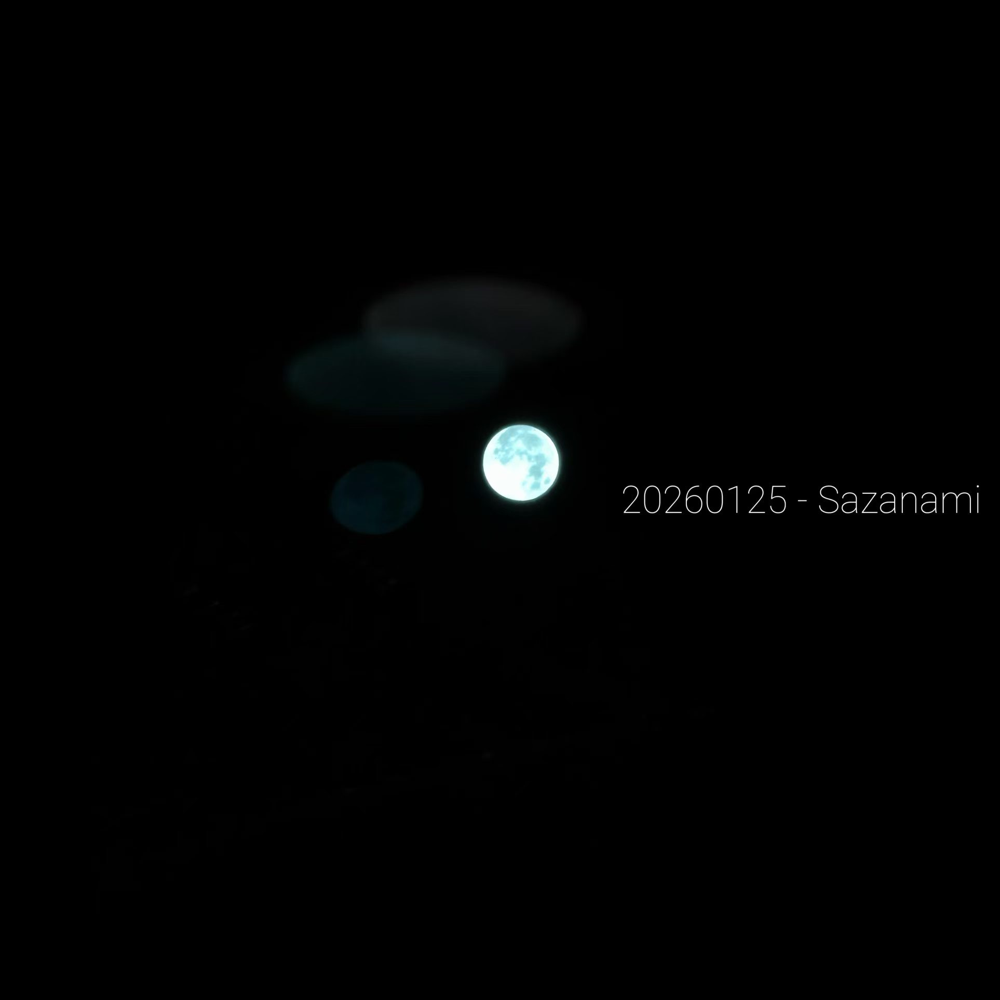

/

20260125 - Sazanami ↗aima news
来自合間的更新
这里还在慢慢积累，之后见。
aima about
关于合間

在埋头奔走的空档中。
「合間」是间隔，也是留给音乐的一点时间。这里收集即兴演奏、原创 demo，还有围绕它们写下的文字和拍下的照片。
有些声音已经成为一期电台，有些还只是未完成的片段。把它们留在这里，也把当时的生活留在这里。
不定期更新。希望某一段声音，能陪你走一会儿。
合間 / aima没有找到这篇记录。
← 返回所有内容